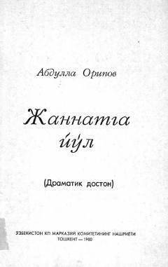

JYJamiyatdagi illatlarni fosh etuvchi hajviy dramatik doston.
Ushbu asar Abdulla Oripovning mashhur dramatik dostonlaridan biri bo'lib, unda diniy mifologiya vositasida jamiyatdagi illatlar, insoniy nuqsonlar va axloqsizliklar hajviy yo'l bilan fosh etiladi. Asar qahramoni o'z hayotini tahlil qilar ekan, muallif san'atkorning jamiyat oldidagi mas'uliyati va haqiqatni himoya qilish zarurati haqida muhim xulosalarni o'rtaga tashlaydi.